It’s 11:40 at night, and Luis has had Joyce’s email open since four.
From: Joyce Abernathy
To: Luis Arroyo
Subject: everything
Notebooks, scratch work, dead ends. The messy ones too. No rush, but I’m up early.
— J
No rush, but I’m up early. That’s a deadline. He knows a deadline when it’s being polite.
He opens a new notebook, names it for_joyce.ipynb, looks at the empty first cell, and doesn’t type anything. Instead he does the thing he’s been not doing for a week. He opens the thread.
From: Dennis Hale, Senior Thermal Analyst
To: thermal-numerics@falkenrath-voss.com
Subject: RE: Mara’s code can’t see the glue
This code has twenty years of successful flights behind it. A plot of an output we explicitly don’t use is not evidence. Please don’t send things like this to the full list.
From: Kurt Sorensen
To: thermal-numerics@falkenrath-voss.com
Subject: RE: Mara’s code can’t see the glue
The convergence check passed. That’s what it’s for.
From: Brandon Kowalczyk
To: Luis Arroyo
Subject: RE: Mara’s code can’t see the glue
Let’s talk before you send anything else to the list.
There are eleven more like the first two. None about the sweep.
He reads them in order, then out of order, as if they might read differently in another order.
None of them is about the plot. They’re about the time stamp. The list. The tone. The code’s age. Twenty years of successful flights. On thick bondlines, on stacks where the glue is four millimeters wide and a polynomial can see it. That’s the point. That was the whole point of the email. The convergence check passed. That’s what it’s for. Yes. And it passed because both of its runs were blind. That’s the other point. It was in the email too, in one sentence, with a plot attached.
He did exactly what Brandon told him to do after the mesher. He showed them. The sweep, the zoom, the reason in one paragraph. Nobody has to read a report to see a curve go through a dashed line.
And Brandon, to him alone: Let’s talk before you send anything else to the list. Luis knows what let’s talk means. Last time it meant three weeks of reports. It means somebody has already decided the problem is him.
He opens a reply and types: If anyone on this list can read a semilog plot, I’m happy to walk them through the part where the number goes over the limit. He reads it twice. It’s good. It’s exactly right, and it would get him fired by Friday. He deletes it one word at a time, so he can enjoy each word on its way out.
At two in the morning last week he’d thought the hard part was over. He’d thought that this time the evidence was so clear it would do the arguing for him. The first step toward a new era. He actually thought the words new era, in his own head. Luis closes his eyes, and a groan comes out of him before he can stop it.
Is it him? He’s been sure that everyone around him is literally stupid. Unable to read hard, objective facts put right in front of them. Either incompetent or deliberately blockheaded. The mesh generator all over again. And now Brandon’s email, just to him.
Brandon presumably isn’t sending one-off emails to the thermal analysts. Could this somehow be his fault? He really can’t see how. But he believes in data, and the data seems to point one way.
Well, not all the data. The meeting with Joyce in 4C comes back to him, and it doesn’t fit with any of this.
She agreed with him. First thing, before she’d even sat down properly: You’re right about the glue. He’d had a whole column of answers ready, and none of them were for that. Then she asked about the math. Not the tone, not the list: how it worked. She said I don’t know why that’s true out loud, in a conference room, like it cost her nothing. Nobody at Falkenrath-Voss has asked him how anything works. Not once, in two years.
And then: Right now, you’re the only person in this building who can check you. That’s a lonely place to be right.
His first reaction, in the room, was that it was a compliment. The only person who can check him. Wasn’t that the point? Only one person can be right in an argument. It’s lonely by design. His second reaction, on the drive home, was that she hadn’t said it like a compliment. She’d said it the way you’d point out a loose wire. He has turned it over every way since, and it won’t sit still.
What if there’s something he can’t see either?
He sniffs sharply, as if he could push the thought out through his nose. Then he does what he always does when he needs somewhere else to put his head. He works.
The notebook is for her. She’s the one reader who might judge it on what’s in it, which means it has to be undebatable. No gaps. No obvious. And it has to start where she starts, which is Mara’s code. Twenty years of running it. She doesn’t need Tent explained from scratch. She needs to know what’s different, and that turns out to be one thing.
1. What Tent is
Tent is Mara’s method with one change.
Same BVP: \(-(k\,u')' = f\) through the stack, with the hot-face and cold-face temperatures carried by a known function, the way Mara’s code carries them. Same three steps:
Choose a subspace \(\mathcal{V}\) and a basis for it.
Make the residual orthogonal to \(\mathcal{V}\): \(\;(f + (k\,u_a')',\, b_k) = 0\;\) for every basis function \(b_k\). Integrate by parts (the face terms drop out), and that’s \(\;\sum_j c_j\,a(b_j, b_k) = (f, b_k)\), with \(a(b_j, b_k) = \int k\,b_j'\,b_k'\,dx\).
Solve the linear system for the coefficients.
Mara chose \(\mathcal{V}\) = polynomials of degree \(n\) across the whole stack. Every one of her basis functions spans all 40 mm, smooth from the hot face to the cold one. Nothing in that subspace can bend inside 0.4 mm, so nothing in it can see the glue. Steps 2 and 3 were never the problem.
Tent changes step 1, and only step 1. Its subspace is built the finite element way, which makes Tent a finite element method.
He reads it back. Good. Under the notation, the recipe is short. Every equation is one test: take the residual, weigh it against one basis function, and require the result to be zero. One test per basis function, and one unknown coefficient per basis function, so the system always comes out square. That’s the whole method.
She knows steps 2 and 3 better than he does; her group ran them for twenty years. The only thing new to her is step 1, and step 1 is all about polynomials built locally, on a chopped-up version of the domain itself.
So step 1 doesn’t start with functions. It can’t. It starts with the stack. Mara’s subspace could be written down without knowing anything about the stack: polynomials of degree \(n\), done. Tent has to cut the stack into pieces first, elements, joined at nodes. In principle the nodes can go anywhere, as many as you like. But the obvious place for them is every place the material changes. That’s the one thing Mara’s code can’t do: her polynomials live on the whole stack at once, and can’t treat one stretch of it differently from another. So Tent puts its nodes at the material edges.
from falkenrath import tent, KESTREL_B as stacknodes = tent.solve(stack, per_layer=1).nodes # at interfacesfor e inrange(len(nodes) -1): a, b = nodes[e], nodes[e +1]print(f"element {e+1}: {a:4.1f} -> {b:4.1f} mm,"f" width {b-a:4.1f} mm")fig, ax = plt.subplots(figsize=(8, 1.4))names = ["tile", "glue", "structure"]for a, b, name inzip(nodes[:-1], nodes[1:], names): ax.axvspan(a, b, alpha=0.5if name =="glue"else0.15, color="gray") ax.text((a + b) /2, 0.55, name, ha="center")ax.plot(nodes, 0* nodes, "ko")ax.set_ylim(-0.3, 1); ax.set_yticks([])ax.set_xlabel("depth (mm)")plt.show()
element 1: 0.0 -> 24.0 mm, width 24.0 mm
element 2: 24.0 -> 24.4 mm, width 0.4 mm
element 3: 24.4 -> 40.0 mm, width 15.6 mm
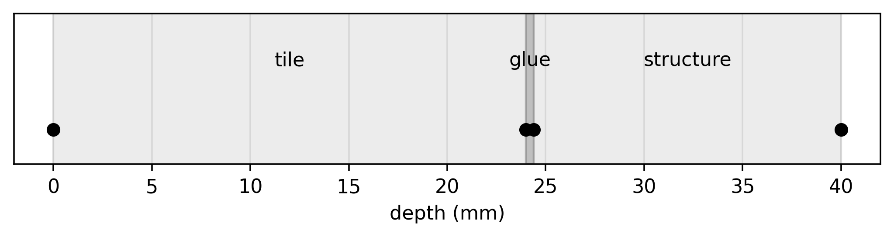
Three elements, four nodes. The tile is one element, 24 millimeters wide. The glue is one element too, 0.4 millimeters wide, 60 times narrower than the tile next to it: at this scale, two dots nearly on top of each other. Mara’s polynomial had to stretch across all of it. Here the glue gets an element of its own, and the element doesn’t care how thin it is.
He starts the next markdown cell.
2. The subspace
The solution lives in the space of
And stops.
The space of what? Continuous functions that are straight on every element. True. But it doesn’t say why. It’s the kind of sentence that comes back with and? written next to it. Why straight lines? Why not something even simpler? Why continuous? What does that buy you, and why should she believe it’s enough? To him the answers are obvious. What he doesn’t have is the sentence that makes the questions unnecessary.
He knows where he first heard it said that way, though. A room that smelled like whiteboard markers, junior year, and a man who never once let a sentence get away with being merely true.
Junior year
Room 112 of the Halston State engineering building had been renovated, according to a plaque by the door, in 1987. It felt older, despite the fresh floor wax. The seats in the third row leaned back a few degrees further than they were meant to. Luis sat there anyway. The third row was close enough to read Pruitt’s handwriting and far enough back that Pruitt had to look for you.
Dr. Pruitt never started with a review. Finally, someone who gave the students some credit. Every other professor spent minutes, literally minutes, at the start of every lecture reminding people what they’d just covered, how it fit into the bigger picture, what came next. Bro, we were there. Pruitt didn’t waste their time. He walked in, picked up a marker, and started.
“Last time,” he said, writing as he talked, “you solved a boundary value problem with polynomials defined on the whole domain. Each one was defined without reference to any particular place in it. Today we do it the other way around. We cut the domain first. Then we decide what a function is allowed to do on each piece.” Under the words he drew the domain, and then the cuts: a line, with dots where the pieces met.
mesh first, functions second
nodes \(x_0, x_1, \dots, x_n\) · elements \([x_{k-1}, x_k]\)
Luis knew that picture. It was the grid from finite differences, five weeks back: the same dots, the same spacing. He liked that more than he expected to. Something old, made to do something new.
“In a spectral method with global polynomials,” Pruitt went on, “you could write the subspace down before you knew anything about the domain. Polynomials of degree \(n\). Done.” He wrote it, and crossed it out. “Here, the subspace cannot even be stated until the mesh is. For the second-order boundary value problem we’ve been working on, for example, the most common choice is this,” and he leaned in to the board to write it.
\(\mathcal{V}_n = \{\, v \;:\; v\) continuous, linear on each element, \(v(a) = v(b) = 0 \,\}\)
“Is it a subspace? Three checks. You have three minutes.” Pruitt capped the marker and folded his arms with his back to the board, the way he did when he meant to wait the full three minutes even if everyone finished in one. It was the one concession he made. No reviews at the start of class, no hand-holding homework (his homework was properly hard). But he gave class time to working out the basics.
Around Luis, pencils. Two seats over, someone drew axes. Luis didn’t need to. He could see it was a subspace. He pictured two functions, each a string of straight segments pinned to zero at both ends, bending only at the dots. Add them. A segment plus a segment is a segment. The bends stay at the dots. Zero plus zero is zero.
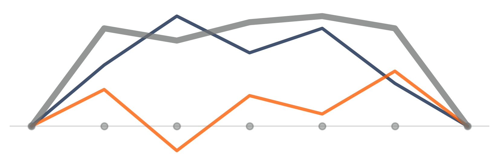
Done. The zero function was obviously in. Scaling was the same picture, taller. He leaned back and looked at the clock: two minutes and forty seconds left.
Two minutes and forty seconds is a long time to spend on a line plus a line. He spent it the way he often did when he was bored in class, doing arithmetic he didn’t want to do. Tuition here, minus his scholarship. Tuition at the other school that had said yes, the one whose name people said a little slower, in hushed tones, like they were in church, minus the aid it had offered, which came nowhere close. Plus his mother’s catering van, which didn’t drive itself to weddings on Saturdays.
No. Luis blinked and stopped himself. Self-indulgent pity party. He looked back up at the board. Could he guess what Pruitt would write next?
It wasn’t only the mesh that was like finite differences. The functions were going to depend on the grid too. In finite differences, the little polynomials slid along with whichever point you were working at; these looked like they’d be pinned to points on the domain as well. But how? And how would that be any different from finite differences?
He checked the clock. One minute. Guessing Pruitt’s next move was a much better game.
He thought back. Finite differences made the differential equation hold at each grid point, with the derivatives swapped for differences. But this was coming out of the spectral methods, so it had to start from a weak form instead. He couldn’t see all the details yet, but it was a start. So then—
“Time,” Pruitt said. Oh, come on. He’d almost had it.
Pruitt went through the three checks in order, exactly as the notes had them. Luis watched him and thought, not for the first time, that Pruitt taught like a man who’d expected to be doing it somewhere else.
Then Pruitt turned to the room. “Now. Why lines?” On the mesh he drew a function that was flat on every element, a constant instead of a line, and jumped at every dot: a staircase. “These are even more local. One number per element. Easier to integrate. Why not these?” And through the staircase, two quick dashed strokes: an X.
The kind of silence where everyone finds something in their notebook that keeps their eyes off Pruitt’s.
“They jump,” Luis said. He hadn’t raised his hand. He had never spoken in this class before, or in any other at Halston. Luis found himself wondering why he’d answered now. Because, he decided, this was the first class that deserved it. The first one that trusted its students to think for themselves and do hard things.
Pruitt turned around. “And?”
“And the integral term needs a slope. A step doesn’t have one at the jump.”
A pause, long enough for Luis to replay the answer, check it for mistakes, and find none.
“Name.”
“Luis Arroyo.”
“Mr. Arroyo. I defined this subspace \(\mathcal{V}_n\) for the rod equation. What if we were instead dealing with a beam?”
Pruitt’s voice didn’t rise at the end, the way it would for a genuine question. It was a test. “The integral needs two derivatives now,” Luis said. “So the slope can’t jump either. Lines won’t do it.”
“Correct,” Pruitt said. “Both times.” He let that sit for exactly one second. “Now say the first one properly.”
Behind Luis, somebody gave a small cough. “I did.”
“You said it so that the people in this room understood it. Say it so that a referee can’t misunderstand it.”
Luis looked at the staircase on the board. He had said it. The jump, the slope, the integral: that was the whole thing. Pruitt didn’t want a better answer. He wanted the same answer in fancier words.
“The weak form for the rod equation,” Luis said slowly, “puts one derivative on each function. Piecewise constants don’t have a derivative at the nodes.”
“Better.” Pruitt wrote it on the board word for word and underlined weak form. “Say it that way the first time, Mr. Arroyo, and people will believe you the first time.” He capped the marker. “Next time: a basis.”
Class over. No fanfare. Pruitt set the marker in the tray, went to the desk, bent over it, and started writing on a sheet of paper.
Luis grabbed his backpack and waited for the rest of the third row to file out ahead of him. By the time he reached the door, Pruitt was standing in it, holding the sheet. He handed it to Luis.
“Three more problems,” he said. “Not for credit. Due with the others.”
No course number at the top, and sure enough, three problems in Pruitt’s handwriting. Had he gone straight from the board to his desk and made these up, just now, for him?
“Why?” Luis said, before he could decide whether that was a good idea.
Pruitt looked at him the way he looked at a board he hadn’t finished erasing. “Because you finished in twenty seconds and spent the rest looking at the clock.” And he left.
Luis stood in the doorway of Room 112 with the sheet in his hand. It was the best thing anyone at Halston State had said to him, and it was homework. He couldn’t tell whether he’d been chosen or sentenced. He folded the sheet once, carefully, and put it in the inside pocket of his bag, where he kept the things he didn’t want bent.
Say it that way the first time. The cursor is still blinking after the space of.
He rereads cell 1. Every integral in the weak form of this problem looks like \(\int k\,u'\,v'\,dx\): one derivative on each function. So the functions can be built piece by piece, one element at a time; that’s the whole point, a different piece for each material. But they need a slope everywhere the integral looks. Constants on each element are the simplest pieces, and they jump at every node, where there’s no slope at all. Lines, joined at the nodes so that nothing jumps, are the simplest pieces that work.
He types it, and halfway through the second sentence he notices he’s typing it the way Pruitt underlined it.
2. The subspace
The solution lives in the space of functions that are continuous through the stack, linear on each element, and zero at the hot and cold faces (the face temperatures are carried separately, as in Mara’s code). Lines, because every integral in the weak form of steady heat conduction looks like \(\int k\,u'\,v'\,dx\): one derivative on each function. Continuous, because a function that jumps at a node has no derivative there.
He leaves it. It’s right. He’d just rather it didn’t sound like Pruitt.
Now a basis for the space. That’s the key piece. The whole game is to require the numerical solution to live in the subspace, and with a basis for the subspace, the numerical solution is guaranteed to be a linear combination of the basis functions. Only the coefficients in that combination are unknown.
Here the space is piecewise-linear functions, and for that space everyone calls the basis functions hat functions. Pruitt called them hat functions, and for a whole semester he circled every tent on Luis’s extra sheets in red and wrote hat next to it. One per node: 1 at its own node, 0 at every other, a straight line up from each neighbor and straight down to the next. A hat is something you wear. These are pitched over the ground and pegged at the neighbors. Tents. When the world settles on a convention and the convention is wrong, you adopt a new one.
The formula for these basis functions is the boring part, so he writes it first and gets it out of the way.
3. The tents
One per node. With element widths \(h_k = x_k - x_{k-1}\) (uneven here: the glue’s is 0.4 mm), \[
b_k(x) = \begin{cases}
\dfrac{x - x_{k-1}}{h_k} & x_{k-1} \le x \le x_k \\[1.2ex]
\dfrac{x_{k+1} - x}{h_{k+1}} & x_k \le x \le x_{k+1} \\[1.2ex]
0 & \text{otherwise}
\end{cases}
\]
Then the part that isn’t boring. He draws every tent on the real stack.
def tent(k, x, nodes):"""The formula above: 1 at node k, 0 at the others.""" e = np.zeros(len(nodes)); e[k] =1.0return np.interp(x, nodes, e)x = np.linspace(0, stack.thickness, 4001)fig, (ax, zm) = plt.subplots(1, 2, figsize=(8, 2.8), gridspec_kw={"width_ratios": [3, 1.2]})last =len(nodes) -1for k inrange(last +1): ls ="-"if0< k < last else":"# faces fixedfor a in (ax, zm): a.plot(x, tent(k, x, nodes), ls, label=f"b{k}")for a in (ax, zm): a.plot(nodes, 0* nodes, "ko", ms=4) # the nodeszm.set_xlim(23.6, 24.8); zm.set_title("the glue")ax.set_xlabel("depth (mm)"); zm.set_xlabel("depth (mm)")ax.legend(loc="center left")plt.tight_layout()plt.show()
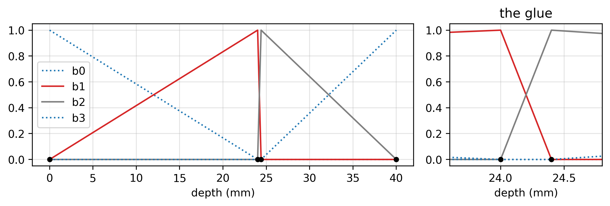
Four tents. But \(b_0\) and \(b_3\), the dotted ones, aren’t basis functions of the space. The temperature at both faces is fixed, so there’s nothing to solve for there; the only unknowns live on tents that are zero at the faces. The space is built entirely from \(b_1\) and \(b_2\).
Neither of them stands over the glue. There’s no node in the middle of the glue to pitch one on. The glue is a single element, so it gets what every element gets: the downhill side of one tent and the uphill side of the next. In the zoom they cross like an X. \(b_1\), the tent at the glue’s hot face, climbs for 24 millimeters across the tile and then drops to zero across the glue’s 0.4. \(b_2\), at its cold face, does the reverse: straight up across the glue, then a long, slow walk down through the structure. Lopsided. Each is nonzero only on the two elements touching its node, however wide or narrow those happen to be.
The numerical solution has to be a combination of these tents. And the tents were built cleverly: designed so that the coefficients in that combination are just the numerical solution’s own values at the nodes.
4. The coefficients are the temperatures
\(b_k\) is 1 at node \(k\) and 0 at every other node. So in the numerical solution \(u_a = \sum_k u_k\, b_k\), every term but one vanishes at node \(j\), and \(u_a(x_j) = u_j\). The coefficients are the temperatures at the nodes. That’s why Tent can report the temperature at the glue’s hot face directly: it’s one of the unknowns.
Of course, to guarantee that the finite element solution \(u_a\) can be written in terms of these tents at all, he has to prove the tents form a basis for the subspace: that every function in the space can be written as a combination of them, and in only one way. He knows they are. He could draw why in thirty seconds.
His hand slows over the empty cell anyway. He has drawn this before, for someone, and it came back marked in red.
Junior year, three weeks later
Homework came back on Tuesdays, face down, passed along the rows. Luis turned his over and went straight to problem 3.
3. Show that the hat functions form a basis for \(\mathcal{V}_n\).
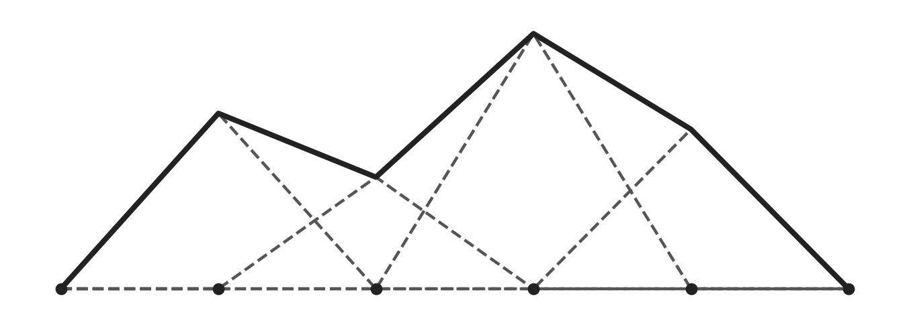
On each element only two tents hat are nonzero. Scale each by \(v\) at its node and add: on every element that’s a line with the right value at both ends, and two points fix a line. So it’s \(v\). ∎
The picture is right. Now prove it. Write \(v\) on \([x_{k-1}, x_k]\) from the formulas for \(b_{k-1}\) and \(b_k\). Independence: one line. Evaluate at the nodes. You drew a proof. Write one.
94
You’re better than this.
Six points off. For an answer Pruitt had just called right, in red, in his own handwriting. The picture was the proof. The two sentences under it were the argument; anyone could check them by looking. What Pruitt wanted was the same thing again in symbols, for the sake of the symbols. And hat, again, next to the word Luis had chosen on purpose.
The paper on the next desk was turned face up, and Luis could read it without trying.
3. There are \(n+1\) hat functions and \(\mathcal{V}_n\) has dimension \(n+1\), so they are a basis. To write \(v = \sum_k c_k b_k\), take each \(c_k\) to be the average of \(v\) over element \(k\). For example, this \(v\) is in \(\mathcal{V}_n\):
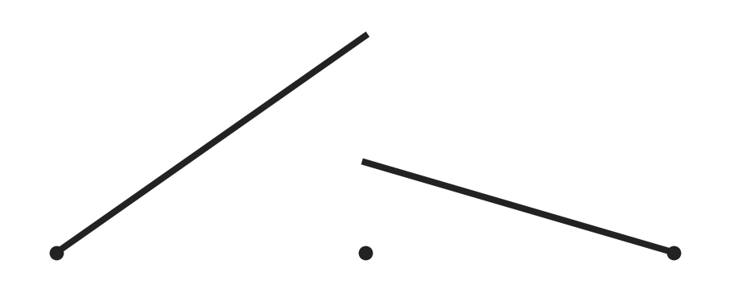
Good start! A few things to tidy up. Let’s go over it together. See me.
70
Three mistakes, and he saw all of them before he’d finished reading. The ends of the space are pinned at zero, so the two tents at the ends aren’t in it: the number of basis functions is \(n-1\), not \(n+1\). And the coefficients aren’t averages; a tent is 1 at its own node and 0 at the others, so the coefficient is the value at the node, and an average would smear in the neighbors. And the example jumps at a node, which means two values at one node and one coefficient to hold them: it’s not in the span, and since it isn’t continuous, it isn’t in the space either.
That submission was worth a forty, generously. It got the kind handwriting and an invitation. He got you’re better than this.
Years later, at his own kitchen table, the cursor is still sitting in the empty cell.
Fine. He writes it.
5. The tents are a basis
On \([x_{k-1}, x_k]\) only \(b_{k-1}\) and \(b_k\) are nonzero, and for any \(v\) in \(\mathcal{V}_n\), the piecewise-linear subspace from cell 2,
\[
v(x_{k-1})\,b_{k-1}(x) + v(x_k)\,b_k(x) \;=\; v(x_{k-1})\,\frac{x_k - x}{h_k} + v(x_k)\,\frac{x - x_{k-1}}{h_k},
\] the line through \((x_{k-1}, v(x_{k-1}))\) and \((x_k, v(x_k))\). Since \(v\) is in \(\mathcal{V}_n\), it is itself a line on that element, and two points fix a line, so this is\(v\) there. So \(v = \sum_k v(x_k)\,b_k\): they span all of \(\mathcal{V}_n\). If \(\sum_k c_k b_k = 0\), evaluate at \(x_j\): \(c_j = 0\). They’re independent.
Four minutes, to write the proof without a picture. He resents every one of them. Then he reads it back next to the picture he’d have drawn, and has to admit they aren’t the same thing said twice. Or at least they’re two different ways of saying it. He brushes the thought away.
Basis done. He types the next header, 6. The system. Now that \(u_a\) is written in terms of the tents, the only thing left is to find the coefficients: the nodal values of \(u_a\). For that he needs as many equations as there are unknown coefficients, a square system he can solve.
His eyes go to the empty cell. This part is Mara’s step 2, unchanged. The finite element method is still a spectral method: it gets its equations by making the residual orthogonal to the subspace, which means orthogonal to every basis function in it, here every tent. Put \(u_a = \sum_j u_j\, b_j\) into step 2, test it against tent \(b_k\), and the integral splits term by term, one term per tent. For each \(k\), \[\sum_j u_j\,a(b_j, b_k) = (f, b_k).\] Still the Galerkin method. Still the recipe from cell 1. All the finite element method changed was which functions go into the integrals. So now the whole game is \(a(b_j, b_k) = \int k\,b_j'\,b_k'\,dx\), tent against tent.
One equation per interior tent, stacked up, is a matrix system, \(Au = f\), with \(A_{kj} = a(b_j, b_k)\) and \(f_k = (f, b_k)\). And since the coefficients are the temperatures at the nodes, the unknown vector \(u\), the \(u_j\) stacked up, is the temperature at every interior node. Solving the system is solving for the temperatures.
So the work now is building that system, and that means evaluating each \(a(b_j, b_k)\). He starts with \(a(b_1, b_1)\), the tent at the glue’s hot face. He looks at its two sides. 24 millimeters on the left. 0.4 on the right. Every textbook draws these things evenly spaced, as if the world came in equal pieces.
\(h\) on the left, \(H\) on the right.
He has heard that said out loud before, while he was holding a marker, defending himself in front of a room full of students.
Junior year, the review before the midterm
By the midterm review, Luis had handed in four of Pruitt’s extra sheets, one with every homework. Every one came back with the problems marked right and every tent circled in red, hat written beside it in the margin, small and neat, like a correction to a typo. He’d stopped arguing about it on paper. He hadn’t stopped writing tent.
Pruitt ran a review the way he ran everything else: as if nobody had seen any of it before. Today it was the matrix. He had a mesh on the board, and he was building the rows of \(A\) out loud. “Each entry is \(a\) of two hat functions. Hat function \(k\) against hat function \(j\). A hat function overlaps only its neighbors, so the hat functions—”
Five times in ten minutes. Luis had started counting.
“Tents,” he said. He meant it for himself, mostly. It came out a little louder than that.
Two rows back, someone snickered.
Pruitt didn’t turn around. He finished the line he was writing, capped the marker, and only then faced the room. “Mr. Arroyo prefers his own vocabulary.” He held the marker out, pointing it at Luis. “Let’s see whether it gets him through the board.”
No freaking way he was serious. Not even Pruitt would make someone come up and teach, on the spot.
Luis was frozen in his seat. The whole room was quiet; he was sure nobody was breathing.
Pruitt hadn’t moved either. The marker was still in his hand, still pointed at Luis.
Luis swallowed. His chair squeaked as he stood and edged along his row toward the board. It was twenty-five steps, and Luis heard every one of them. His face was hot before he got there. The marker was still warm from Pruitt’s hand.
“Row \(k\),” Pruitt said. “Which entries are nonzero?”
Luis looked up at the board. The domain was broken into elements and nodes, evenly spaced, and otherwise blank. He could feel his pulse in the side of his neck. Breathe. He knew this.
He drew three tents over the nodes, one pitched on each. “Only with \(k-1\), \(k\), and \(k+1\). The others don’t overlap.” Easy. He drew them a little bigger than he needed to.
“Slope of \(b_k\) on the element to its right?”
“Minus one over \(h\).” He drew the derivative of \(b_k\) underneath his tents: a flat step up on the left, a flat step down on the right.
“So \(a(b_k, b_{k+1})\)?”
He shaded the one element the two tents shared. He was doing this. From Pruitt, no wrong, Mr. Arroyo was the same as you’re killing it, Luis, great job. He just had to not make a stupid mistake. He stepped back and let himself see what he’d drawn. This was about the area under the product of the two slopes, over the element he’d just shaded.
Their slopes there were minus one over \(h\) and plus one over \(h\); times \(k\), across a width of \(h\). “Minus \(k\) over \(h\).” He was ahead of Pruitt now, writing the next line before the question came. He could do this asleep.
“\(a(b_k, b_k)\)?”
“Two \(k\) over \(h\).” Square the step and it’s positive on both sides; one \(k/h\) from each.
“Now the spacing isn’t uniform. Lowercase \(h\) on the left, capital \(H\) on the right.”
Luis’s hand tensed. How was this not over? For half a second the board was too white; it didn’t have what he needed. The marker hovered.
Then he saw it. It was all already there. He closed his eyes for a second and let himself see the picture with the spacing pulled apart.
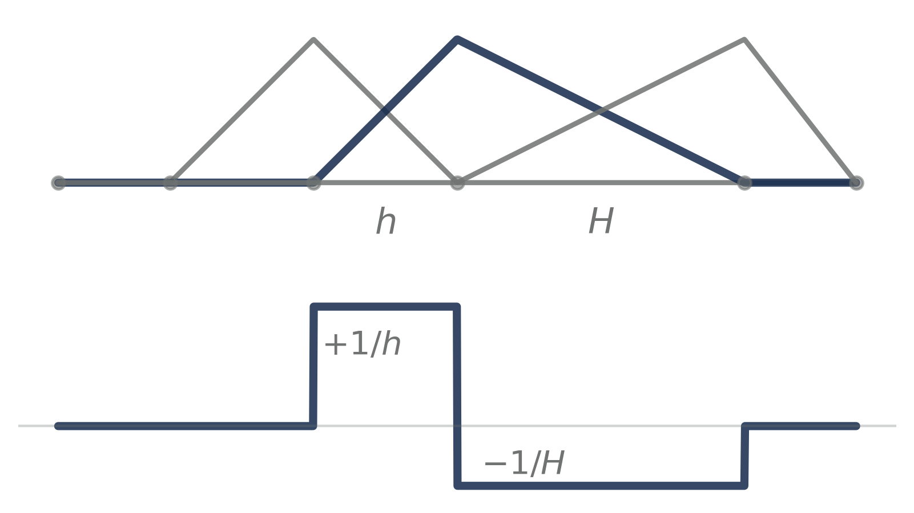
The left side was still one over \(h\), squared, across \(h\); the right side was the same thing with \(H\). “\(k\) over little \(h\), plus \(k\) over big \(H\).”
“Row sums?”
“Zero.”
“Why?”
“A constant has no slope.” Zero slope everywhere, so \(a\) of a constant against anything is nothing.
A beat. “Good.”
Pruitt had never said that to him before. Not on a sheet, not out loud. Luis felt it land somewhere under his ribs and stay there. He was flying. He was very nearly grinning, and he turned back to the board so nobody would see it.
“Then why doesn’t the first row sum to zero?”
Nothing.
The board was enormous, ready to swallow Luis. He could feel the shape of the answer, somewhere just to the left of where he was looking: something about the end, about what was and wasn’t there. The words wouldn’t come with it. The marker had gotten heavy. Behind him, forty people were being quiet in a way he could feel on the back of his neck. Pruitt waited exactly long enough for everyone to notice that he was waiting.
Then he took the marker back.
“Ms. Ortiz. On a hundred-node mesh, how many nonzeros in a row?”
“Three.”
“Good.”
“That is literally the first question you asked me.” It was out before Luis had decided to say it. And he wasn’t going to apologize for it. He’d gotten six questions right, at the board, under a barrage. For all six he’d gotten one good, and not a warm one. Marcela Ortiz had just gotten the same good, a kinder one, for repeating his first answer.
Pruitt was already writing. He didn’t turn around. “Don’t be sore because you missed a basic question, Mr. Arroyo. Sit down.”
Twenty-five steps back. It felt like more. People pulled their feet in to let him by. The seat in the third row took him back at its usual angle, a few degrees further than it was meant to, the way everything in Room 112 leaned a little. His three tents stayed on the board for the rest of the hour. Pruitt wrote around them and never erased them.
Luis blinks, and he’s back at his kitchen table with the notebook for Joyce in front of him. But what he sees isn’t the screen. It’s the board, years ago, and every answer he gave on it. And every one of those answers was really about what a single element contributes to \(a(b_j, b_k)\); he just hadn’t been asked that way. Look one element at a time instead of one row at a time, and only two tents live there. Their slopes are plus and minus one over its width. Multiply, times \(k\), across the width. Work out each element’s piece, then put the pieces together. Assembly: that’s what they called it. He puts his fingers on the keyboard.
6. One element
On element \(e\) (width \(h_e\), conductivity \(k_e\)), only two tents are nonzero, with slopes \(+1/h_e\) and \(-1/h_e\). So the element adds \[
\frac{k_e}{h_e}\begin{bmatrix} 1 & -1 \\ -1 & 1 \end{bmatrix}
\] to the rows and columns of its two nodes. A node between two elements collects one piece from each side: \(k/h + k/H\).
Now the assembly part. Build the whole matrix one element at a time and let the blocks overlap where the elements share a node.
k = stack.conductivity # tile, glue, structuren =len(nodes) -1# elementsA = np.zeros((n +1, n +1))for e inrange(n): # element e joins nodes e, e+1 h = nodes[e +1] - nodes[e] Ae = k[e] / h * np.array([[1, -1], [-1, 1]]) A[e:e+2, e:e+2] += Aeprint(np.round(A, 3))
Three blocks, each one dropped in on top of the last where they share a node. The two diagonal entries in the middle are where it shows: each is one block’s corner plus the next one’s. The thinnest element makes the loudest number: the glue’s \(k/h\) is 18 times the tile’s.
Everything off those three diagonals is zero, and it stays zero however many elements he adds, because a tent only ever overlaps its neighbors. Mara’s matrix was the opposite: every one of her polynomials spans the whole stack, so once there were layers, every entry filled in. A thousand elements here means a thousand rows with three numbers in each. A thousand polynomials there meant a million numbers, and a solve to match.
He catches himself enjoying something else, too. Give every element the same \(k\) and the same width, and every interior row reads \(k/h\) times \((-1,\ 2,\ -1)\): the finite-difference matrix from five weeks into that semester, arrived at from a completely different idea.
The face temperatures are fixed, so the coefficients on \(b_0\) and \(b_3\) aren’t unknowns: they’re 1100 K and 300 K. Every term that carries one of them is known, so it moves to the right-hand side, where it acts like an extra heat source pushing on the unknown temperatures. For the first unknown, at the glue’s hot face, the row reads \[a(b_1, b_1)\,u_1 + a(b_2, b_1)\,u_2 \;=\; (f, b_1) - a(b_0, b_1)\,T_{\text{hot}}.\] What stays on the left is the matrix for the two unknowns. He looks at its first row: 0.792 and -0.750. It doesn’t sum to zero.
Of course it doesn’t. The full row did, because \(b_0\) was in it. But \(b_0\) isn’t in the space: the hot face’s temperature is fixed, so its term went to the right-hand side, and with it the -0.042 that balanced the row. And a constant can’t be in \(\mathcal{V}_n\) anyway, because it doesn’t vanish at the faces. The space is the part that’s zero at both faces; the face temperatures ride along on \(b_0\) and \(b_3\), outside it.
Four years, and it’s one line.
The right-hand side is the last piece. \((f, b_k)\) is the heating weighed by tent \(k\): how much of the heat deposited in the stack lands near node \(k\). He works it out element by element, the same way as the matrix, and runs Tent on the tile heating problem.
from scipy.integrate import quadfrom falkenrath import exactf = np.zeros(n +1) # (heating, b_k), element by elementfor e inrange(n): a, b = nodes[e], nodes[e +1]; h = b - a left =lambda s: stack.heating(s) * (b - s) / h right =lambda s: stack.heating(s) * (s - a) / h f[e] += quad(left, a, b)[0] f[e +1] += quad(right, a, b)[0]T = np.zeros(n +1); T[0], T[-1] = stack.T_hot, stack.T_coldinner =slice(1, n) # the unknowns: interior nodesrhs = f[inner] - A[inner, 0] * T[0] - A[inner, -1] * T[-1]T[inner] = np.linalg.solve(A[inner, inner], rhs)Te = exact(stack)for x_, T_ inzip(nodes, T): err =abs(T_ - Te.at(x_))print(f"{x_:5.1f} mm {T_:8.3f} K error {err:.0e}")
0.0 mm 1100.000 K error 0e+00
24.0 mm 446.472 K error 1e-13
24.4 mm 402.879 K error 0e+00
40.0 mm 300.000 K error 0e+00
Perfect: the same zeros at the nodes as last week. But last week they came out of a solver nobody else had seen. These came out of twenty lines she can read top to bottom.
The notebook is good. Really good, even. But it isn’t complete.
I don’t know why that’s true. That’s what Joyce said, calmly, easily. Why is it?
He can’t just show her that Tent is exact. He has to show her why it has to be. Anything less is dressing up what she’s already seen.
His fingers hover over the keyboard. Really, why is it true? Numerical answers are almost never exact. He has to give Joyce that.
He scrolls back to the plot from the night he sent the email:
Three straight segments laid across a curve that is plainly not straight, and every node sitting dead on it. He’s seen it so many times that he stopped seeing it. He makes himself see it again.
It shouldn’t work. Straight lines through a curve should miss it everywhere, a little, the way a chord misses an arc. These miss it everywhere except at the nodes, where they miss it by nothing. Not small. Nothing.
He pulls a pad of paper over and draws the temperature. Then the tents under it. Then he crumples it. Then the slopes, which is closer, and crumples that too. For twenty minutes he forgets what the notebook is for. He isn’t building anything. He’s just turning the thing over to see what’s on the other side, and it’s the best twenty minutes he’s had in a week.
Then 4C comes back. His response to Joyce: “It fits slopes. It’s obvious if you draw it.”
Three crumpled sheets beside his laptop say it wasn’t obvious. He’d known the answer was a picture. He hadn’t had the picture.
Obvious. He knows that word from the other side. He has stood at a board with a marker in his hand and heard basic.
He doesn’t finish that thought.
What would she do with the why, if he gave it to her? A week ago he had never heard of her. She walked in from nowhere, agreed with him, and asked about the math. That could mean she’s the first person here who’ll actually read the work. But read it how? She was willing to agree with him out loud. More than willing: she started with it. Did she want to believe him? Or would her red ink come too, just slower, once she knew which parts he’d least want to see marked up?
He writes it for her anyway. Half of it is something like generosity: wanting to believe she might want to see it because it could be right. The other half is bracing, for having to defend why it isn’t wrong.
x = np.linspace(0, stack.thickness, 4001)slope = np.gradient(Te.temperature(x), x) # true slope, K/mmbars = np.diff(T) / np.diff(nodes) # Tent: slope per elementfig, (a1, a2, a3) = plt.subplots(1, 3, figsize=(10, 2.8))a1.plot(x, slope)a1.set_title("true slope: jumps at interfaces")a2.plot(x, slope, alpha=0.35)for e inrange(n): a2.plot(nodes[e:e+2], [bars[e]] *2, lw=3, color="C1")a2.set_title("Tent: the average slope, per element")a3.plot(x, Te.temperature(x))a3.plot(nodes, T, "o-", color="C1")a3.set_title("rise matches rise: nodes land")for a in (a1, a2, a3): a.set_xlabel("depth (mm)")plt.tight_layout()plt.show()
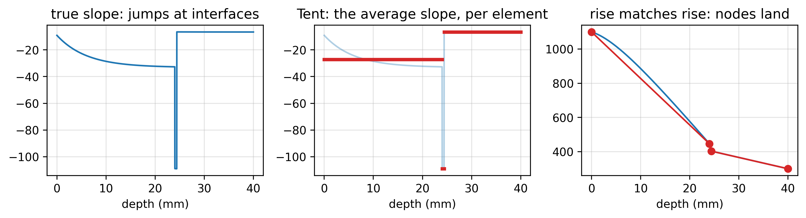
7. Why the nodes are exact
Galerkin makes the residual orthogonal to every tent. In the weak form Tent actually solves, after integrating by parts, that says \[\int k\,(u - u_a)'\,b_k'\,dx = 0 \quad\text{for every } k.\] Now look at what’s in that integral. A tent’s slope is a constant on each of its two elements. So on each element, the integral is just a constant times the slope of the error, added up across the element, and adding up a slope across an element gives the rise across it. Orthogonality to a tent only ever sees how much the error rises across each element. It’s blind to what the error does in between.
Tent’s lines can’t follow the curve between the nodes, and they don’t have to. What a line can do is rise across its element by exactly what the true temperature rises there. Do that on every element, and the error rises by zero across each one, so every orthogonality condition holds. Galerkin has exactly one answer, so that’s the answer. Start at the hot face, where the temperature is fixed, and add up the rises: every node lands on the curve.
He reads it back, and it’s right, and it’s clean, and he doesn’t know which reader he’s written it for. The one who’d circle it. Or the one who’d say I don’t know why that’s true, out loud, like it cost her nothing. No: like it gave her something. Something to enjoy holding, and figuring out.
He stretches his fingers, straightens his back, and checks the time. 3:10. His eyelids are heavy, and for a moment his bed sounds like a very good idea. He scans the cells he’s written so far. The method. The mesh. The space. The tents. The basis, written out. The element. The matrix. The solve. The slopes. They’re airtight. It’s the best report he’s written this year.
Then, Joyce’s voice comes back into his head. Polite but not polite enough to just let him rest.
Then how, she’d said slowly, is the temperature converging?
The itch from when she first asked it comes back. A riddle is a riddle. Mara’s code gets the slopes wrong at every interface, at every polynomial degree, forever. The temperature is built out of those slopes. And yet the temperature converges. Something is being forgiven, and he wants to know what. And Joyce wants to know what.
He opens a new cell and types it in before he can talk himself out of it: Why does the temperature converge for Mara’s code when the flux never does?
That means Mara’s code, not Tent. He reopens it. Not on the thin stack: there the polynomial is still blind to the glue, and the blindness would sit on top of whatever he’s looking for. On the thick legacy stack the glue is four millimeters wide, wide enough to see from the start, so whatever’s left at the interface is the ringing and nothing else.
from scipy.integrate import trapezoidfrom falkenrath import mara, KESTREL_A as thickxi = thick.interfaces[-1] # glue -> structurex = np.linspace(xi -2, xi +2, 20001)q = exact(thick).flux(x)for deg in (64, 128, 256, 512): err = mara.solve(thick, degree=deg).flux(x) - q peak, l2 =abs(err).max(), trapezoid(err**2, x)print(f"degree {deg:3d}: peak error {peak:.2f}"f" integral of error^2 {l2:.3f}")
degree 64: peak error 3.80 integral of error^2 1.855
degree 128: peak error 3.68 integral of error^2 0.902
degree 256: peak error 3.63 integral of error^2 0.454
degree 512: peak error 3.67 integral of error^2 0.239
There it is. The peak barely moves: 3.8, 3.7, 3.6, 3.7. Double the polynomial degree as many times as you like and the spike at the interface stays just as tall. But it gets narrower, so the integral of its square halves every time the degree doubles. The error in the slope goes to zero on average, even though at the interface it never goes to zero at all.
So that’s what’s being forgiven: a spike that never shrinks, in a region that keeps getting thinner. And the temperature is the slope added up, so it inherits the small integral and not the tall spike.
It’s half an answer. He can see that it happens. He can’t see why the method is entitled to it: why a Galerkin solution would accept a permanent spike in exchange for a small integral, why that’s the trade it makes and not some other. He tries for an hour. He gets close enough to feel the shape of it, the way he felt the shape of the first row at the board, and no closer.
At 4:30 he reads the cell back as carefully as he can, as Joyce will read it. A question, a table, and a paragraph that stops in the middle of an idea. It isn’t perfect. But it’s more than he knew before. Surely it’s more than Joyce knew when she asked. It would give her something new to work from.
Is that enough? It’s so late it’s early now, and his mind drifts to a hotel ballroom, and to standing in front of an easel for hours.
Senior year, April
The undergraduate research symposium was in the ballroom of the Halston Marriott, on folding easels in rows, under chandeliers that had seen better weddings. Luis’s poster was mostly pictures. Vortex shedding behind a cylinder, in a water tunnel he’d built from a sixty-gallon fish tank and a pool pump, with food dye for the flow, his phone for a camera, and a script that tracked the vortices frame by frame. The vortices peeled off one side and then the other, in a street as regular as a heartbeat, and at the bottom of the poster sat a Strouhal number that matched the textbook.
It won.
He hadn’t let himself expect it, and then it happened, and for a while he didn’t know what to do with his hands. Professors he’d never had came by to shake one of them. The department chair said remarkable. Somebody took a photo.
And under all of it, a thing he’d never said to anyone: so I could have. The other school, the one that had said yes. He’d never known whether he’d have made it there, and there was no way to find out; you don’t get to run that experiment. He’d worked weekends in the van and nights on this, with a fish tank and a pool pump. This was as high as he could have gone with what he had. And it was the top. Maybe he’d belonged there after all. Maybe Halston had just been a detour the world made him take, and now it was over.
Pruitt came last. He stood at the poster longer than anyone had, reading all of it, the way he read a board. Luis waited.
Pruitt put one finger on the bottom corner. “Your Strouhal number has three significant figures and no error bar.”
Then, quietly, so that only Luis heard it: “They’ll see where you’re from and assume you’re not good enough. So be better than good.”
And he walked away, toward the coffee.
Luis stood next to his poster with the ribbon still on it. The pictures were the same pictures. The number at the bottom had three significant figures and no error bar, and now it was the only thing on the poster he could see. Where you’re from. He’d been from somewhere else for about ten minutes. Now he was from Halston again, and Pruitt had just told him he always would be.
He didn’t hear it as kindness then. It took the poster away from him.
At his kitchen table, he half-hears it as kindness now. That’s worse.
Better than good. No holes. He looks back at the last cell. The non-answer about why Mara’s code converges in temperature but never in flux. He still doesn’t know which reader Joyce is. If she’s the kind one, the half-answer costs him nothing. If she isn’t, it costs him the one person in the building who asked how anything works.
He selects the cell, the question and the table and the paragraph that stops, and deletes it.
At 5:04 he attaches the notebook to an email with no message in it and sends it to Joyce. Everything he’s run. Everything except the one messy thing he still can’t tidy up. Nobody asks for the messy stuff and means it.